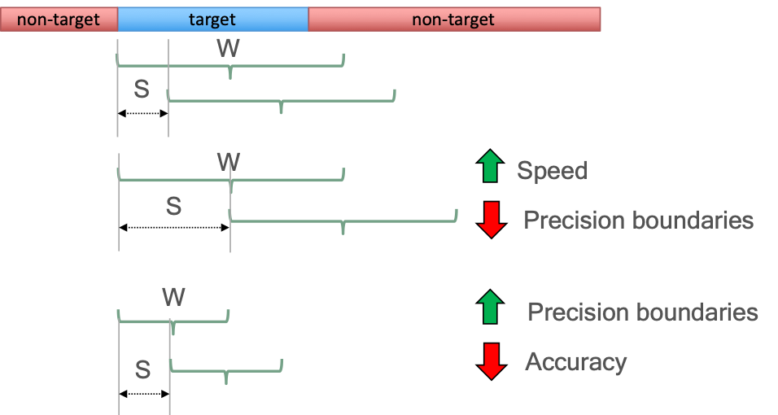

sdd-diarizeEmbedSmolive-v1 (Speaker Detection)
Version Changelog
| Plugin Version | Change |
|---|---|
| v1.0.0 | Initial plugin, released with OLIVE 5.3.0 |
| v1.0.2 | Feature-enhanced plugin, this version adds a float-32 full-resolution model to back off to when loading of the quantized 'smolive' model fails, which can happen on certain hardware that does not fully support the quantized model. Released with OLIVE 5.4.0. |
Description
The model in this plugin has been modified with both quantization and pruning. Quantized models perform computations at a reduced bit resolution (integer8 in our case) than the standard floating point precision allowing for a more compact model representation and the use of high performance vectorized operations on many hardware platforms. Further details can be found at pytorch Pruning aims to make neural network models smaller by removing a subset of the nodes that have minimal impact on the performance. The pruned neural network is fine-tuned on the target task to minimize the performance loss. The result is a much lighter-weight and often faster-performing model that sacrifices little-to-no accuracy.
This plugin bridges the gap between Speaker Detection and Speaker Diarization plugins. As it processes the submitted audio, the diarization stage will segment the submitted audio to determine 'who spoke when' by automatically clustering speech regions that it determines to be attributable to the same speaker, and labels them with class names such as 'unknownspk1', 'unknownspk2', etc. With those regions established, if there are speaker enrollments for different speakers of interest, the plugin will then attempt to determine if any of those "unknown speaker" regions belong to one or more of the enrolled speakers of interest, similar to a traditional Speaker Detection plugin.
The output then combines these operations, by outputting the enrolled class name for regions where the system is confident that an enrolled speaker is detected, and retaining the "unknown speaker" labels where the system isn't confident that the speech comes from an enrolled speaker.
Domains
- telClosetalk-smart-v1
- Domain focused on close-talking microphones meant to address the audio conditions experienced with telephone conversations.
Inputs
For enrollment, an audio file or buffer with a corresponding speaker identifier/label. For scoring, an audio buffer or file.
Outputs
In the basic case, an SDD plugin returns a list of regions with a score for each detected, enrolled speaker. Regions are represented in seconds. As with SID, scores are log-likelihood ratios where a score of greater than “0” is considered a detection. The SDD plugins are generally calibrated or use dynamic calibration to ensure valid log-likelihood ratios to facilitate detection.
Example output:
/data/sid/audio/file1.wav 8.320 13.110 unknownspk00 1.4000
/data/sid/audio/file1.wav 13.280 29.960 unknownspk01 1.4000
/data/sid/audio/file1.wav 30.350 32.030 unknownspk00 1.4000
/data/sid/audio/file2.wav 32.310 46.980 Phil 2.5333
/data/sid/audio/file2.wav 47.790 51.120 unknownspk02 1.4000
/data/sid/audio/file2.wav 54.340 55.400 unknownspk00 1.4000
Enrollments
Speaker Detection plugins allow class modifications. A class modification is essentially the capability to enroll a class with sample(s) of a class's speech - in this case, a new speaker. A new enrollment is created with the first class modification, which consists of essentially sending the system an audio sample from a speaker, generally 5 seconds or more, along with a label for that speaker. This enrollment can be augmented with subsequent class modification requests by adding more audio with the same speaker label.
Functionality (Traits)
The functions of this plugin are defined by its Traits and implemented API messages. A list of these Traits is below, along with the corresponding API messages for each. Click the message name below to go to additional implementation details below.
- REGION_SCORER – Score all submitted audio, returning labeled regions within the submitted audio, where each region includes a detected speaker of interest and corresponding score for this speaker.
- CLASS_MODIFIER – Enroll new speaker models or augment existing speaker models with additional data.
Compatibility
OLIVE 5.4+
Limitations
Known or potential limitations of the plugin are outlined below.
Quantized Model Hardware Compatibility
There are certain host/hardware requirements for the quantized models to be able to run; namely support for avx2. To avoid the situation where a lack of this support would cause the plugin to become nonfuntional, a full-bit (float32) model has been included that will be loaded and used in the rare case that the quantized model fails to load. This will use more memory, but allow the plugin to function.
Labeling Resolution vs. Processing Speed vs. Detection Accuracy
Region scoring is performed by first identifying speech regions and then processing the resulting speech regions above a certain length (win_sec) with a sliding window. Altering the default parameters for this windowing algorithm will have some impacts and tradeoffs with the plugin's overall performance.
Shortening the window and/or step size will allow the plugin to have a finer resolution when labeling speaker regions, by allowing it to make decisions on a smaller scale.
The tradeoff made by a shorter window size, though, is that the system will have less maximum speech to make its decisions, resulting in a potentially lower speaker labeling accuracy, particularly affecting the rate of missed speech.
A shorter step size will result in more window overlap, and therefore more audio segments that are processed multiple times, causing the processing time of the plugin to increase.
These tradeoffs must be managed with care if changing the parameters from their defaults.
Minimum Speech Duration
The system will only attempt to perform speaker detection on segments of speech that are longer than X seconds (configurable as min_speech, 2 seconds by default).
Comments
Segmentation By Diarization
By default, this plugin uses blind speaker diarization to separate individual speakers within a file. This allows us to have much higher resolution when determining speaker boundaries than the previous plugins' "segmentation by classification" approach, and also avoids forcing a decision to be made between bounday resolution and processing speed.
Under this segmentation scheme, the plugin first attempts to perform speaker diarization on the audio, clustering speakers that it believes are similar together, and labeling those regions appropriately unknownspk00, unknownspk01, etc. Once it has hypothesized individual speakear regions within the audio, it will then compare that audio against any enrolled speakers if they exist. If the plugin is confident enough that the speech of one of the "unknowns" actually belongs to an enrolled speaker, it updates the label and score for those regions accordingly.
Segmentation By Classification (Legacy, Optional)
This segmentation method is an optional, legacy method of clustering the speakers found within a file. Due to design considerations, it will always have to compromise between processing speed and diarization resolution. It should only be enabled by experienced users under specific circumstances.
Live, multi-talker conversational speech is a very challenging domain due to its high variability and quantity of speech from many speakers across varying conditions. Rather than exhaustively segment a file to identify pure regions with a single talker (the vast majority of whom are not of actual interest), SBC scans through the file quickly using target speaker embeddings to find regions that are likely to be from a speaker of interest, based on the scores for their enrolled model. The approach consists on a sliding window with x-set steps as described in Figure 1.
Figure 1: Sliding window approach for Segmentation-by-Classification (SBC) plugin
The first step this plugin performs when operating under SBC takes is to mask the audio by performing speech activity detection. This allows some natural segmentation by discovering breaks between speech sections caused by silence, and allows the algorithm to focus on the portions of the audio that actually contain speech. Any speech segment longer than X seconds (configurable as min_speech, default 2 seconds) is then processed to determine the likelihood of containing a speaker of interest. Speech regions of up to X seconds (configurable as win_sec, default 4 seconds) are processed and scored whole, while contiguous segments longer than this are then processed using the sliding window algorithm shown above, whose parameters (window size/win_sec and step size/step_sec) are configurable if you find the defaults not to work well with your data type.
Options
The following options are available to this plugin, adjustable in the plugin's configuration file; plugin_config.py.
| Option Name | Description | Default | Expected Range |
|---|---|---|---|
| threshold | Detection threshold: Higher value results in less detections being output, but of higher reliability. | 0.0 | -10.0 to 10.0 |
| win_sec | Length in seconds of the sliding window used to chunk audio into segments that will be scored by speaker recognition. See below for notes on how this will impact the system's performance. | 4.0 | 2.0 to 8.0 |
| step_sec | Amount of time in seconds the sliding window will shift each time it steps. See below for important notes about the sliding window algorithm behavior. A generally good rule of thumb to follow for setting this parameter is half of the window size. | 2.0 | 1.0 to 4.0 |
| min_speech | The minimum length that a speech segment must contain in order to be scored/analyzed for the presence of enrolled speakers. | 2.0 | 1.0 - 4.0 |
| output_only_highest_scoring_detected_speaker | Determines the output style of the plugin, and whether all speakers scoring over the detection threshold are reported for each applicable speech segment (value=False), or only the top scoring speaker (value=True). |
False | True or False |
| dia_fixed_unknown_speaker_score | The placeholder score assigned to unknown speaker regions to maintain region scoring format compatbility. | 1.4 | -1000 - 10000 |
| enable_diarization | Determines whether segmentation by diarization is performed, to use blind diarization to automatically cluster and segment the file into different speakers. If set to false, segmentation by classification is performed is performed instead, using the sliding window approach described above. | True | True or False |
| enable_diarization_unknown_spk_output | Determines whether labels for unknown speakers are output. If set to false, plugin only performs speaker detection and will not attempt to label unknown speakers. | True | True or False |
Additional option notes
min_speech
The min_speech parameter determines the minimum amount of contiguous speech in a segment required before OLIVE will analyze it to attempt to detect enrolled speakers. This is limited to contiguous speech since we do not want the system to score audio that may be separated by a substantial amount of non-speech, due to the likelihood of including speech from two distinct talkers. The parameter is a float value in seconds, and is by default set to 2.0 seconds. Any speech segment whose length is shorter than this value will be ignored by the speaker-scoring portion of the plugin.
win_sec and step_sec
The win_sec and step_sec variables only come into play if the enable_diarization option is set to false and the plugin is processing via segmentation by classification instead of segmentation by diarization. This is an optional, legacy mode for the plugin and will likely not be encountered. These options can be ignored unless you are intentionally enabling the legacy segmentation method.
These options determine the length of the window and the step size of the windowing algorithm respectively. Both parameters are represented in seconds. These parameters affect the accuracy, the precision in the boundaries between speakers, and the speed of the approach. Figure 2 shows an example on how the modification of size of the window (W) and the step (S) affect those factors.
 Figure 2: Example of changing the win_sec and step_sec parameters and how this influences the algorithm speed as well as the precision and accuracy of the resulting speaker boundary labels
output_only_highest_scoring_detected_speaker
The boolean output_only_highest_scoring_detected_speaker parameter determines the format of the output by the plugin. If output_only_highest_scoring_detected_speaker is set to False, the plugin will report all the speakers above the threshold for a given segment. However, if output_only_highest_scoring_detected_speaker is set as True, the plugin will report only the speaker with the maximum score for a given segment even when multiple speakers have scores above the threshold. An example of this behavior distance follows.
If we have a segment (/data/sid/audio/file2.wav) with scores for three different speakers previously enrolled,
/data/sid/audio/file2.wav 32.310 46.980 Phil 3.5333
/data/sid/audio/file2.wav 32.310 41.120 Fred 5.400
/data/sid/audio/file2.wav 54.340 55.400 Sarah 2.430
and we change the threshold to 3.0, then with output_only_highest_scoring_detected_speaker = True, the system reports:
/data/sid/audio/file2.wav 41.130 46.980 Phil 3.5333
/data/sid/audio/file2.wav 32.310 41.120 Fred 5.400
However, with output_only_highest_scoring_detected_speaker = False, the system reports:
/data/sid/audio/file2.wav 32.310 46.980 Phil 3.5333
/data/sid/audio/file2.wav 32.310 41.120 Fred 5.400
The default behavior of this plugin is to have this parameter set to False and to report all speaker detections over the detection threshold for each region.